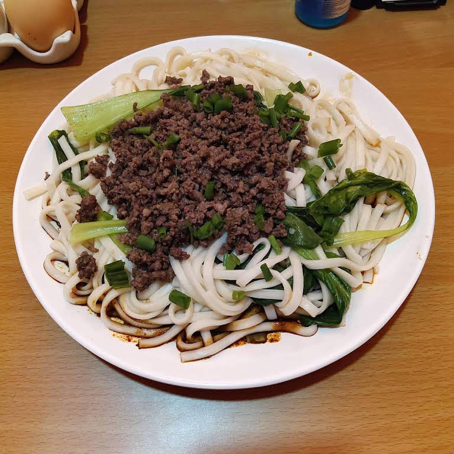

Kima Noodles

How to Make Kima Noodles
You'll find a detailed ingredient list and step-by-step instructions in the recipe below, but let's go over the basics:
Kima Noodles are the ultimate go to lunch...AND they're super easy to make at home!
Ingredients
You'll only need five ingredients to make these irresistible Kima Noodles:
- 1 lb ground beef (or any ground meat)
- Onion, garlic, ginger (chopped and minced)
- Spices: cumin, coriander, turmeric, cinnamon, cloves, cayenne
- Noodles (8 oz), such as egg noodles or rice noodles/li>
- Optional toppings: cilantro, green onions, peanuts, chilies, lime wedges
Try different toppings to switch things up!
Recipe instructions (taken from the book)
- Boil noodles in salted water, drain, and set aside.
- Sauté onion till translucent, add minced garlic and ginger.
- Brown ground meat, add cumin, coriander, turmeric, cinnamon, cloves, cayenne.
- Season with salt, simmer briefly to meld flavors.
- Plate noodles, top with kima, garnish with cilantro, peanuts, chilies, and lime.
We have determined the nutritional value of oil for frying based on a retention value of 10% after cooking. Amount will vary depending on cooking time and temperature, ingredient density, and specific type of oil used.
Return to main page